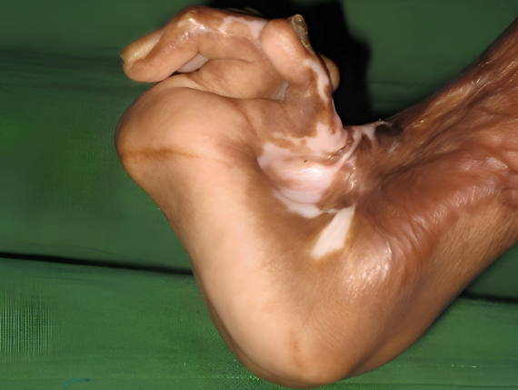
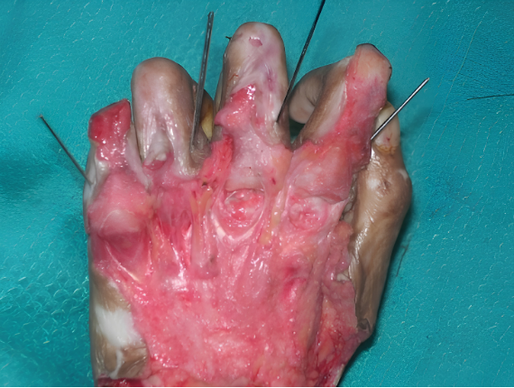
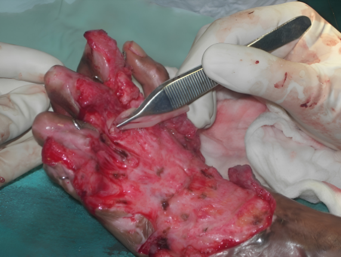
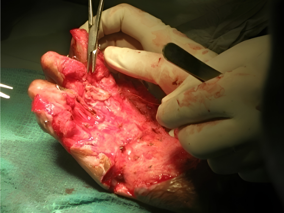

Surgicoll-Mesh®
Soft Tissue Surgical
Implantable, bioresorbable, tissue regenerative sterile Type-I Collagen matrix. Designed for reconstructive surgery, chronic wounds, diabetic ulcers, burns and soft tissue repair.
Soft Tissue Surgical
Implantable, bioresorbable, tissue regenerative sterile Type-I Collagen matrix. Designed for reconstructive surgery, chronic wounds, diabetic ulcers, burns and soft tissue repair.

This has been a very critical case of major burn injury by electric shock in a young male adult patient lead to pressure sore ulcer. During Feb-Mar 2020, after debriding the wound, Surgicoll-Mesh was applied. Rapid formation of granulation tissue in the affected areas was observed. Surgicoll-Mesh® effectively relieved pain since the day applied and the patient walked home harmoniously on day-7 after application.

Electric burn victim with bedsore resulting in Chronic Ulcer
Day-0

Biological, Biocompatible Collagen product applied

Show uplift of healthy granulation soft tissues around
vertebral
spinous processes
Day-4

Significant wound healing is down here
Day-31

PTU 1

PTU 2

PTU 3

PTU 4

SPTU 5

PTU 6

PTU
Day-30

PTU
Day-45
Surgicoll-Mesh® is highly bio-active due to its high purity of Type-I Collagen which is phosphorylated to provide relevant tissue regeneration along with maximum wound healing benefits.
Its clinical effectiveness is evidenced through the infiltration of blood capillaries into the Surgicoll-Mesh® matrix within 4 to 5 days after application. As a result, Surgicoll-Mesh® heals wounds significantly faster (at least 60%) than most other advanced tissue repair products in the market.
Note: The patient was quite comfortable on day-7 and relieved himself from the hospital. Hence, no follow-up pictures are available.
Non-healing Diabetic Ulcers could be Healed Faster by this NANOTECHNOLOGICAL approach!
Surgicoll-Mesh®
Diabetes is a growing challenge in India with estimated 8.7% diabetic population in the age group of 20 and 70 years. The overall perception of the delayed diabetic wound healing is neuropathy resulting in poor arterial blood supply and venous circulation.
Damage to the nerve by increased level of glucose in blood may result in loss of sensation and the inability to feel any pain or pressure.
High blood glucose levels thicken the arteries and narrow its blood vessels, restricting the delivery of the blood and oxygen needed to support the body's natural healing abilities.
Suppressed immune system may facilitate pathogen proliferation eventually leading to an infection like non-healing diabetic ulcer.
Diabetes may suppress the immune system that could impair the body's ability to fight-off an infection.
In hyperglycemic patients, Glycosylation of the newly formed wound bed Collagen hinders the normal enzymatic (lysyl oxidase) maturation leading to non-healing. The hyperglycemic glucose may be absorbed by Surgicoll-Mesh® for faster healing of the ulcer wound.

One-month post traumatic ulcer with gangrene of 4th toe

Application of Surgicoll-Mesh

Application of Surgicoll-Mesh

31 Days Post Application


Normal materials that are used to cover an ulcer:
All such materials are able to protect wound as a wound cover and may absorb the secreted fluid (exudate). Upon usage of such non-biological scaffold materials, cells may not feel comfortable when they come in contact.
Accordingly, this would un-necessarily delay the wound healing process because the exudation will continue until the cells are comfortable with the surrounding environment.
On the other hand, Surgicoll-Mesh® like biological products may provide a better result. However, all biological materials are not the same. Using an advanced biological skin substitute like Surgicoll-Mesh® will not disturb the cells on the surface of the wound involved in the tissue granulation process.
Uncross-linked biocompatible Collagen tightly applied over the wound surface.
The Collagen matrix osmotically pulls excess glucose from the hyperglycaemic wound bed.
With less glucose, newly formed Collagen fibrils avoid glycosylation and can be matured by lysyl oxidase.
Matured cross-linked Collagen enables the diabetic wound to heal mirroring normal wound repair.
Excellent coverage over exposed bones and joints could be achieved faster by this NANOTECHNOLOGICAL approach!
Surgicoll-Mesh®
Surgicoll-Mesh offers clear advantages over synthetic and other Collagen products for Reconstructive surgeries. It acts as a scaffold that can be naturally and progressively integrated, remodeled and eventually replaced by functional host tissue

Hand deformation before surgery.

Surgical procedure Day 1

Surgical procedure Day 3

Showing 90% healing - Day 10


Review or download comprehensive specifications, product literature, and peer-reviewed publications.